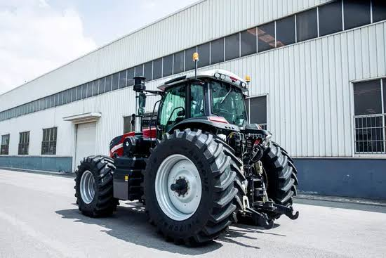
Practical agricultural products and solutions for farmers, businesses and agricultural projects — from tractors and farm inputs to irrigation and Gatoma motorcycles.
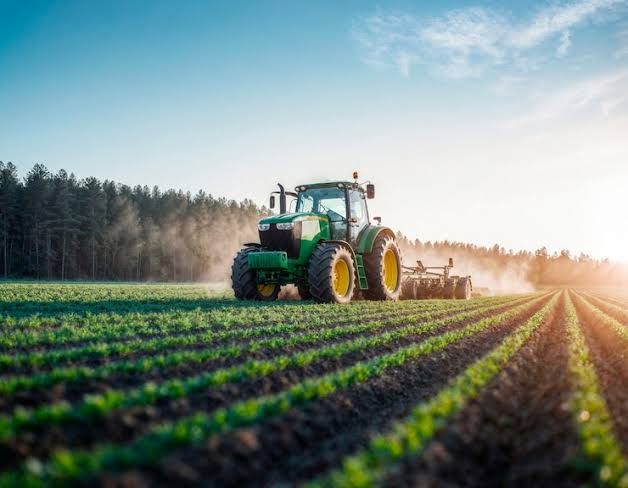
Explore the main categories available through NELK Agro Services.

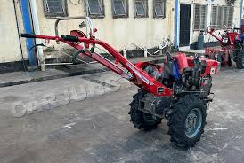
Compact machinery options for smaller farms and field preparation.
Enquire →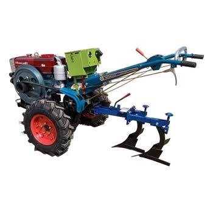
Field implements and compact equipment for soil preparation.
Enquire →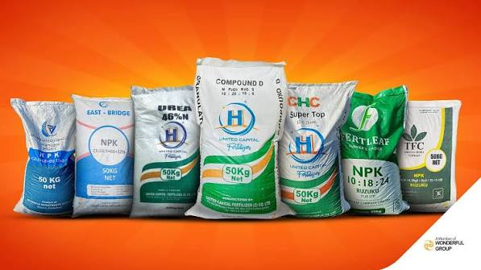
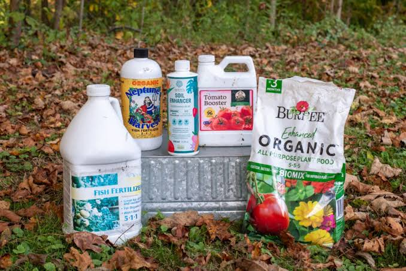
Liquid and organic fertilizer products for different crop needs.
Enquire →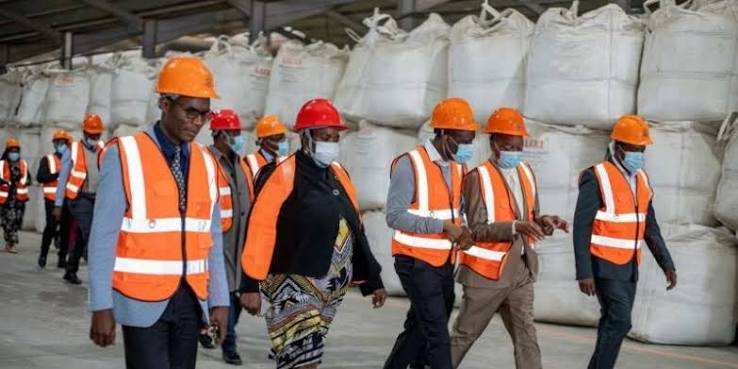
Talk to us about availability and quantities for your farming operation.
Request stock information →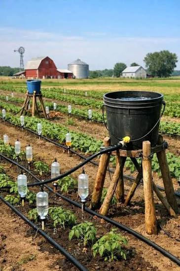
Efficient water delivery systems for crops and gardens.
Discuss your project →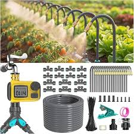
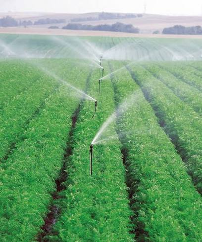
Sprinkler solutions for efficient field and crop watering.
Enquire →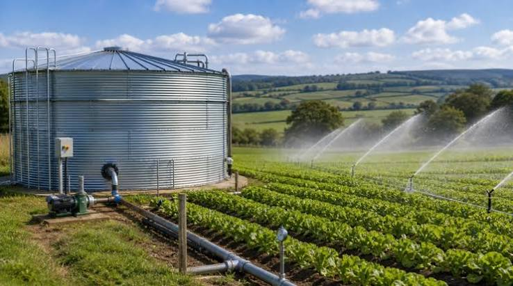
Water storage and field distribution solutions for agricultural projects.
Discuss your project →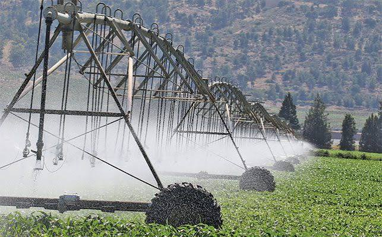
Solutions for larger cultivated areas and commercial farming.
Request information →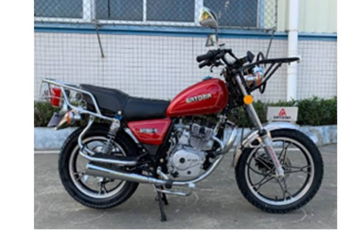
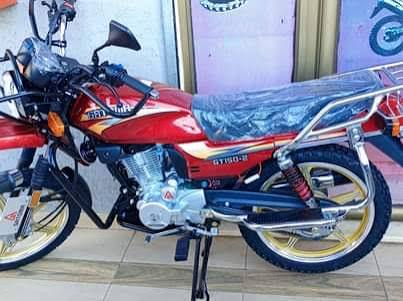
From compact machinery to commercial tractors and irrigation systems, NELK can help you identify the right category for your operation.
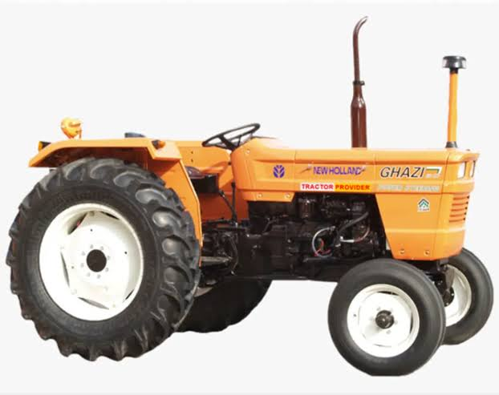
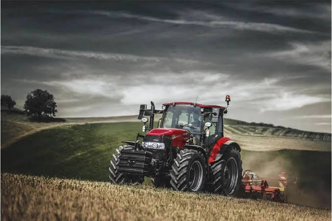
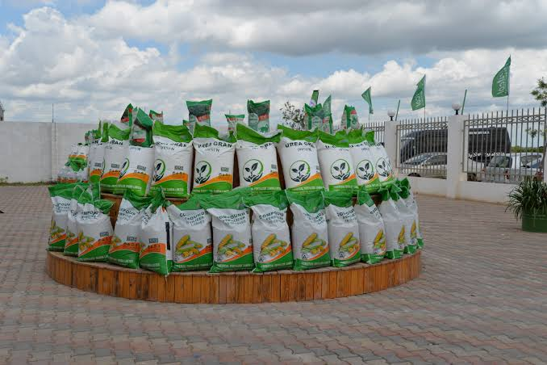
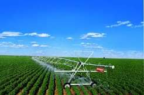
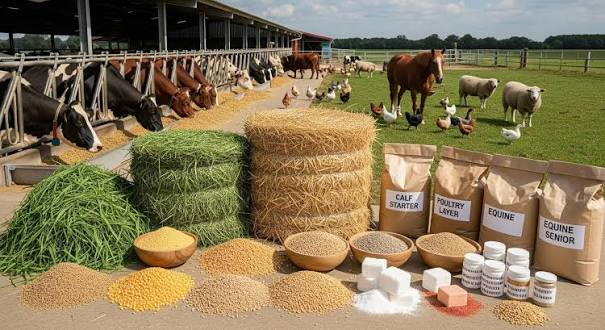
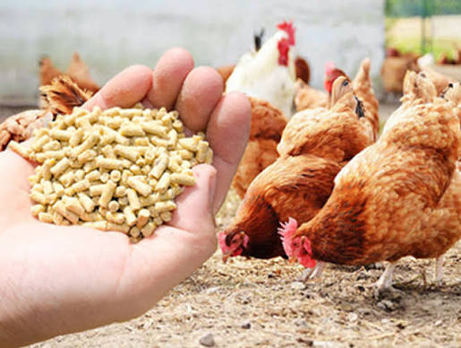
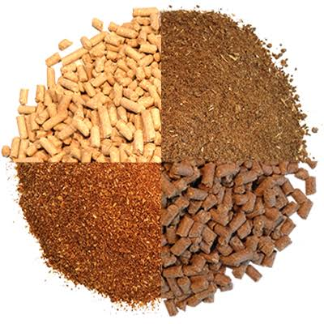
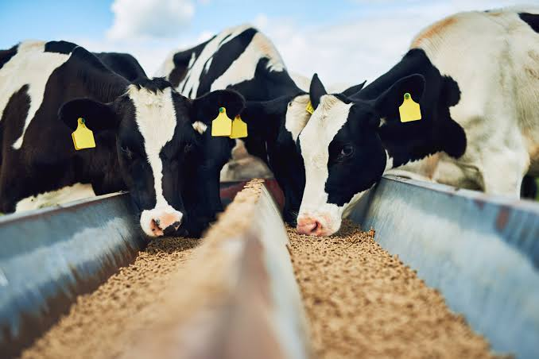
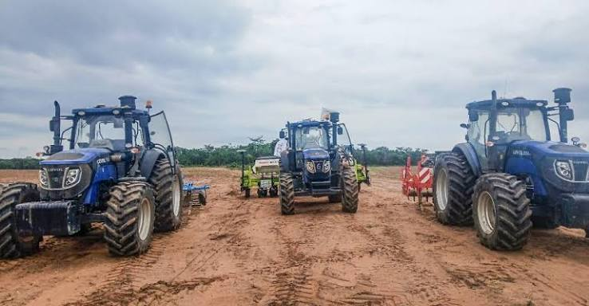
AGRICULTURE IS OUR FOCUSNELK Agro Services is an agricultural services and supplies company based in Mumbwa, Zambia. We bring essential farm products, machinery, irrigation solutions and mobility products together for farmers, businesses and agricultural projects.
Images are used to present the range. Please confirm current models, specifications, prices and availability with NELK.
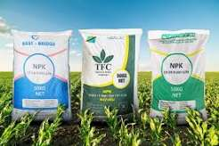
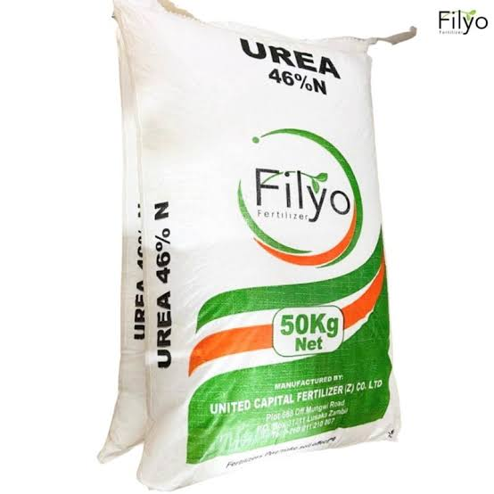
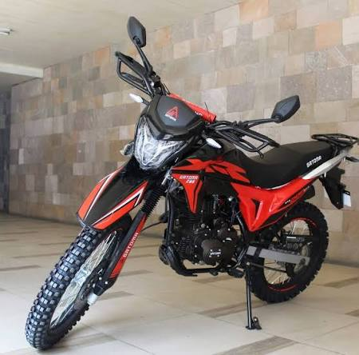
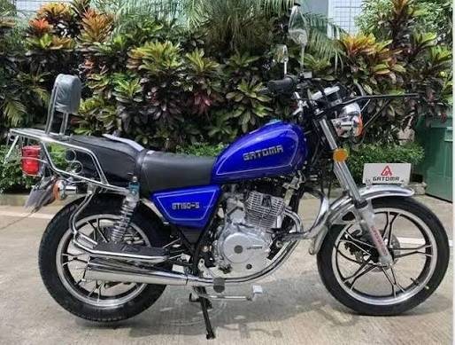
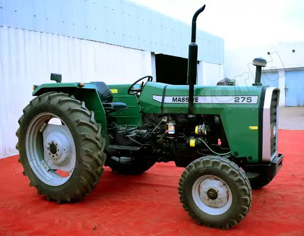
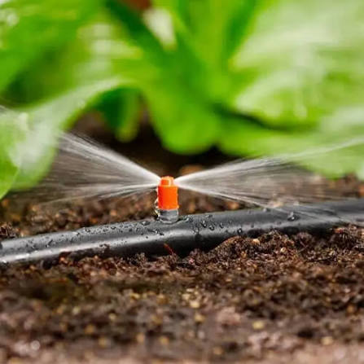
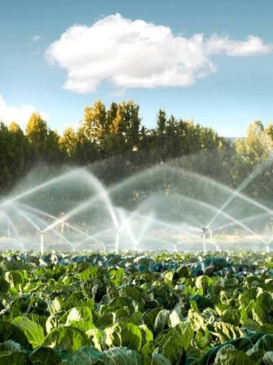
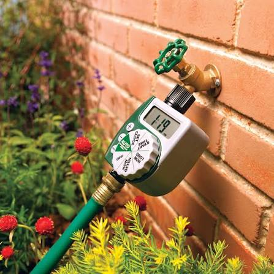
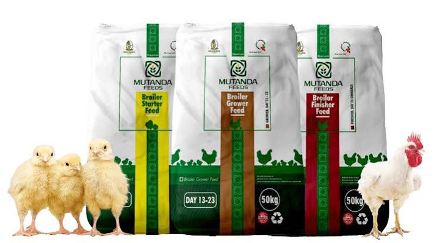
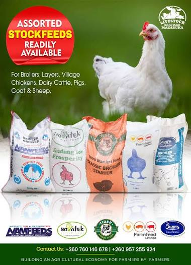
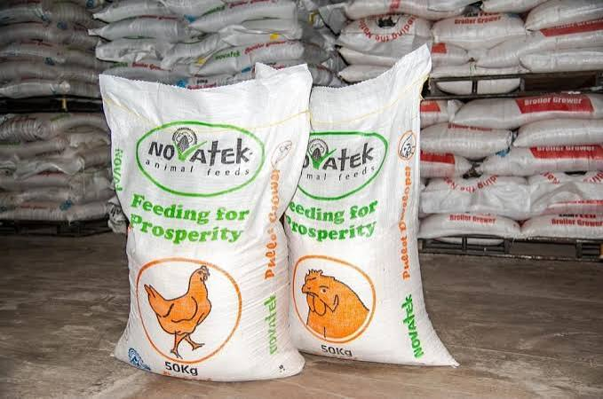
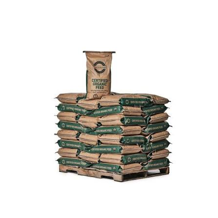
Access key agricultural categories from one local business.
Talk with our team about your farming or equipment needs.
Gatoma motorcycles add practical transport options.
Find us at TD Business Center in Mumbwa.
Ask about availability, quotations, bulk orders, tractors, farm inputs, irrigation, power tillers, stock feed or Gatoma motorcycles.
Send us a WhatsApp message describing what you need.
Start WhatsApp Enquiry